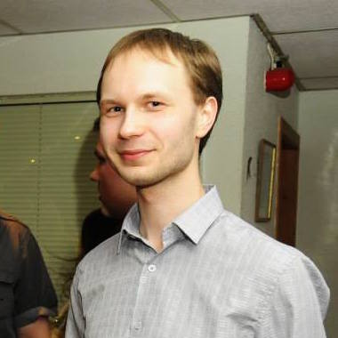

<div id="main">
    <div class="container">
        <div class="row">

            <!-- Content -->
            <div id="content" class="8u skel-cell-important">
                <section>
                    <header>
                        <h2>Abstract</h2>
                    </header>
                    <p>Parallel accelerators such as GPUs are notoriously hard to
                        program; exploiting their full performance potential is a job
                        best left for ninja programmers. High-level programming languages
                        coupled with optimizing compilers have been proposed
                        to attempt to address this issue. However, they rely on
                        device-specific heuristics or hard-coded library implementations
                        to achieve good performance resulting in non-portable
                        solutions that need to be re-optimized for every new device.</p>
                    
                    <p>
                        Achieving performance portability is the holy grail of
                        high-performance computing and has so far remained an
                        open problem even for well studied applications like matrix
                        multiplication. We argue that what is needed is a way to
                        describe applications at a high-level without committing to
                        particular implementations. To this end, we developed 
                        a functional data-parallel language which
                        allows applications to be expressed in a device neutral way.
                        We use a set of well-defined rewrite rules to automatically
                        transform programs into semantically equivalent device-specific
                        forms, from which OpenCL code is generated.</p>
                    <p>
                        We demonstrate how this approach produces
                        high-performance OpenCL code for GPUs with a well-studied,
                        well-understood application: matrix multiplication.
                        Starting from a single high-level program, our compiler automatically
                        generates highly optimized and specialized implementations.
                        We group simple rewrite rules into more complex
                        macro-rules, each describing a well-known optimization
                        like tiling and register blocking in a composable way. Using
                        an exploration strategy our compiler automatically generates
                        50,000 OpenCL kernels, each providing a differently
                        optimized – but provably correct – implementation of matrix
                        multiplication. The automatically generated code offers
                        competitive performance compared to the manually tuned
                        MAGMA library implementations of matrix multiplication
                        on Nvidia and even outperforms AMD’s clBLAS library.</p>
                    
                </section>
                
                <section>
                    <header>
                        <h2>Publications</h2>
                    </header>
                    <ul>
                        <li>
                            Michel Steuwer, Toomas Remmelg, and Christophe Dubach:
                            <strong><a href="publications/2017/steuwer17LiftIR.pdf">
                                Lift: A Functional Data-Parallel
                                IR for High-Performance GPU Code Generation</a></strong>, 
                            in the <i><a href="http://www.cgo.org/" target="blank">Proceedings of the 2017
                            International Symposium on Code Generation and Optimization (CGO)</a></i>.
                        </li>
                        <li>Michel Steuwer, Toomas Remmelg, and Christophe Dubach:
                            <strong><a href="publications/2016/steuwer16beyondAutoTuning.pdf">
                                Matrix Multiplication Beyond Auto-Tuning: Rewrite-based GPU Code Generation</a></strong>, 
                            in <i><a href="http://www.esweek.org/cases/about" target="blank">
                                Proceedings of the 2016 International Conference on Compilers, Architecture and 
                                Synthesis for Embedded Systems (CASES)</a></i>.</li>
                        <li>Toomas Remmelg, Thibaut Lutz, Michel Steuwer, and Christophe Dubach:
                            <strong><a href="publications/2016/remmelg16perfport.pdf">
                                Performance Portable GPU Code Generation for Matrix Multiplication</a></strong>,
                            in the <i><a href="http://conf.researchr.org/track/PPoPP-2016/GPGPU-2016-papers" target="blank">
                                9th Workshop on General Purpose Processing using GPUs</a> (GPGPU) @ PPoPP</i>.</li>
                    </ul>
                </section>
            </div>

            <!-- Sidebar -->
            <div id="sidebar" class="4u">
                <section>
                    <header>
                        <h2>Talks</h2>
                    </header>
                    <div class="row">
                        <section>
                            <ul class="style">
                                <li>
                                    <p class="posted">Oct 4, 2016 @ the International Conference on Compilers, Architectures
                                        and Synthesis for Embedded Systems (CASES) 2016 in Pittsburgh, USA</p>
                                    <p><a href="presentations/2016/CASES-2016.pdf">
                                        Matrix Multiplication Beyond Auto-Tuning: Rewrite Based GPU Code Generation</a></p>
                                </li>
                                <li>
                                    <p class="posted">Apr 21, 2016 @ the Institute for Computing Systems Architecture
                                        (ICSA) Sessions at the University of Edinburgh, UK</p>
                                    <p><a href="presentations/2016/ICSA-2016.pdf">
                                        Expressing Optimisations as Rewrites</a></p>
                                </li>
                                <li>
                                    <p class="posted">Mar 12, 2016 @ the Annual Workshop on General Purpose Processing
                                        using Graphics Processing Units (GPGPU) 2016 in Barcelona, Spain</p>
                                    <p><a href="presentations/2016/GPGPU-2016.pdf">
                                        Performance Portable GPU Code Generation for Matrix Multiplication</a></p>
                                </li>
                                <li>
                                    <p class="posted">Oct 19, 2015 @ the Programming Language Interest Group at the
                                        University of Edinburgh, UK</p>
                                    <p><a href="presentations/2015/PLInG-2015.pdf">
                                        A Functional Approach to Performance Portable GPU Code Generation: A Case 
                                        Study on Matrix Multiplication</a></p>
                                </li>
                            </ul>
                        </section>
                    </div>
                </section>
                <section>
                    <header>
                        <h2>Posters</h2>
                    </header>
                    <ul class="style">
                        <li>
                            <p class="posted">Oct 4, 2016 @ the International Conference on Compilers, Architectures 
                                and Synthesis for Embedded Systems (CASES) 2016 in Pittsburgh, USA</p>
                            <p><a href="posters/2016/CASES-2016.pdf">
                                Matrix Multiplication Beyond Auto-Tuning: Rewrite Based GPU Code Generation</a></p>
                        </li>
                    </ul>
                </section>
                <section class="profile">
                    <header>
                        <h2>Researchers</h2>
                    </header>
                    <div class="row">
                        <section class="6u">
                            <a href="https://www.inf.ed.ac.uk/people/students/Toomas_Remmelg.html" class="image full">
                                </a>
                            <a href="https://www.inf.ed.ac.uk/people/students/Toomas_Remmelg.html">Toomas Remmelg</a>
                            <br>
                            PhD Student
                            <br>
                            <a href="http://www.ed.ac.uk/informatics/">University of Edinburgh</a>
                        </section>
                        <section class="6u">
                            <a href="http://homepages.inf.ed.ac.uk/cdubach/" class="image full">
                                </a>
                            <a href="http://homepages.inf.ed.ac.uk/cdubach/">Christophe Dubach</a>
                            <br>
                            Supervisor
                            <br>
                            <a href="http://www.ed.ac.uk/informatics/">University of Edinburgh</a>
                        </section>
                    </div>
                </section>
            </div>

        </div>
    </div>
</div>
